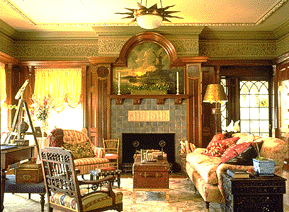
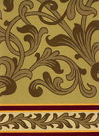
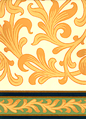

|
 |
Photograph courtesy of Karen Houghton Interiors, Nyack, New York |
|
|
|
|
 |
 |
Chauncy Frieze
Trimmed width: 17 1/2" to 18"
Printed once across
Price per yard: $ 30.00
"Chauncy Frieze" Named for an original owner of the house in Marshall, Michigan, where the paper was found, this gentle meander design looks very good with other figures beneath (Persis, Summer Street, Giotto or Ginko Leaf), and it is handsome above a plain painted wall. The design is c. 1880 - 90. It is 17 1/2" tall, which neatly fits over the picture rail in many American Victorian houses. Sold by the yard. Hand printed in New England. Offered in celadon green, pale gold on cream and sage green. $30.00 per yard.
Return to Burrows Studio Wallpaper designs
Go to J.R. Burrows & Company Main Page